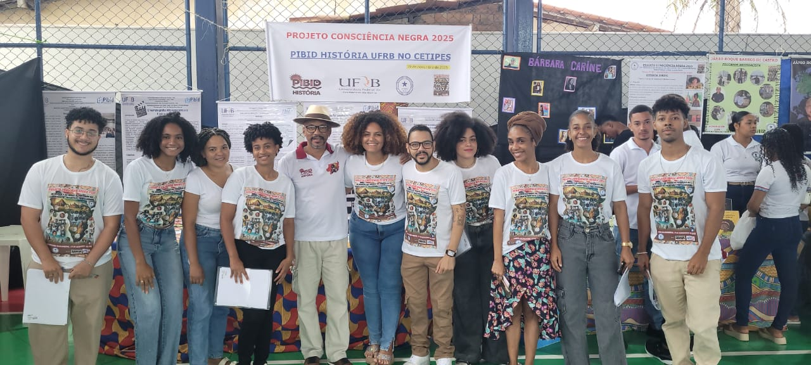

Perfil
Espaço preparado para apresentar a trajetória docente e a relação com o Curso de História da UFRB.

Memorial 20 anos · Perfil docente
Professor do Curso de História da UFRB
Espaço preparado para apresentar a trajetória docente e a relação com o Curso de História da UFRB.
Espaço preparado para áudio ou vídeo do(a) professor(a).
Espaço para disciplinas, projetos, orientações, eventos, pesquisa, extensão e outras atividades.
Espaço para publicações, fotografias, documentos, registros e outros materiais selecionados para o Memorial.
Vozes dos egressos
Memórias de ex-estudantes ajudam a registrar a trajetória docente de Juvenal de Carvalho Conceição a partir das experiências de formação construídas no Curso de História da UFRB.
Cássia Caren Santana Teixeira, egressa do Curso de História da UFRB, compartilha suas memórias sobre o professor Juvenal de Carvalho Conceição e sua experiência de formação no curso.
Conhecer a trajetória de Cássia →